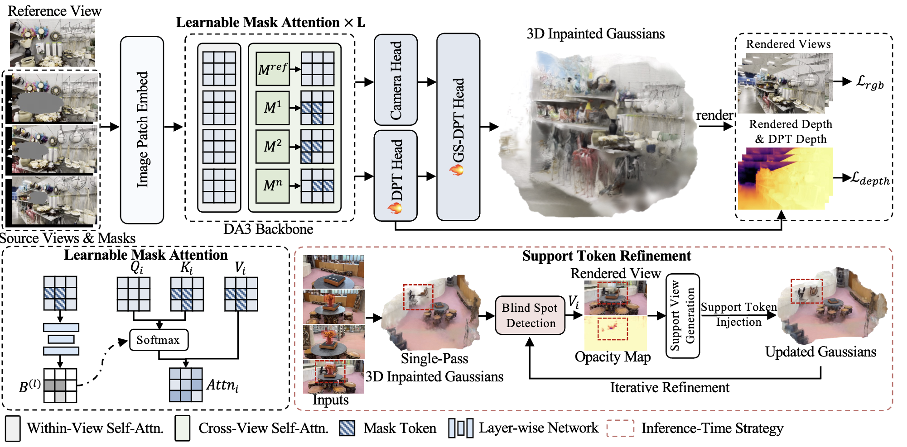
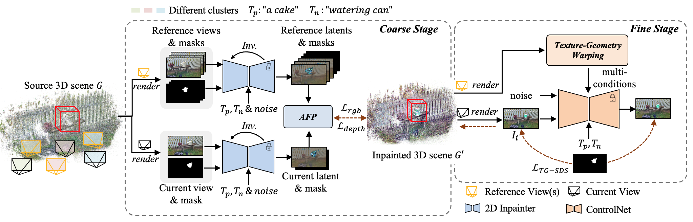
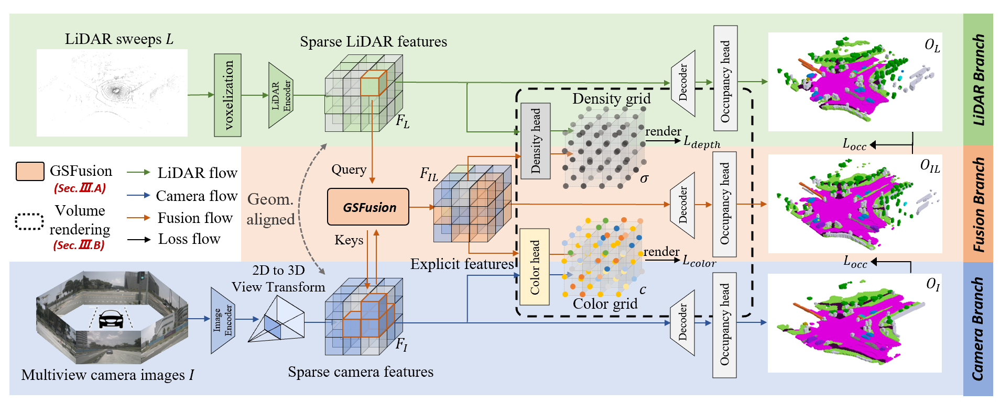
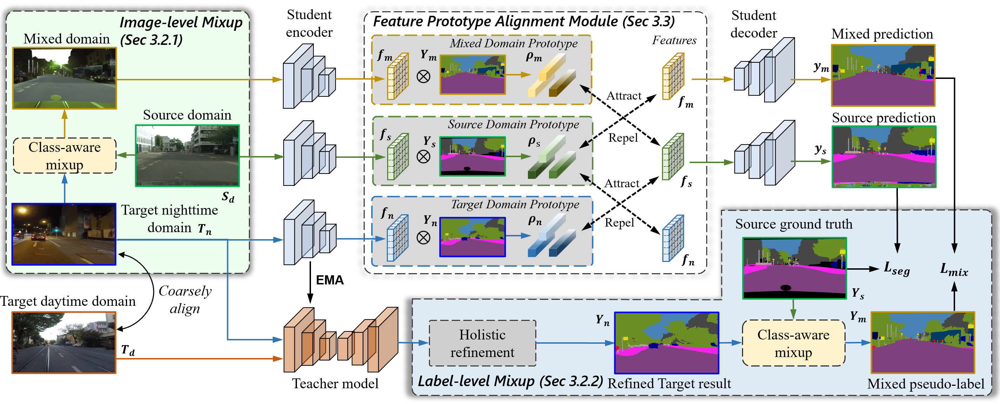
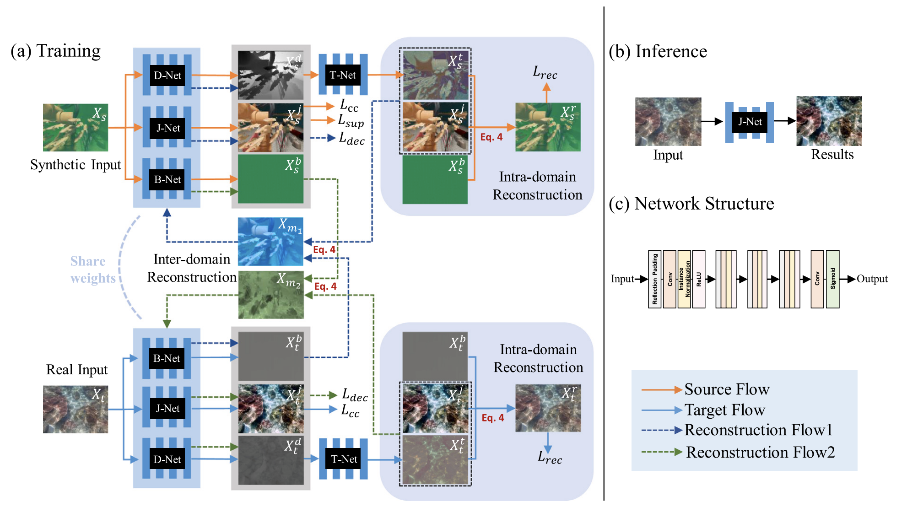
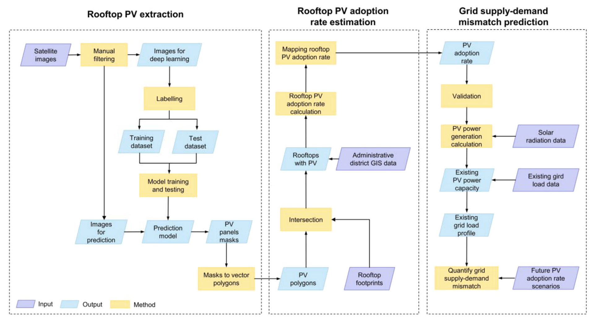

Research
My research interests include 3D editing, multimodal scene understanding, and generative AI. I have worked on developing novel methods for 3D scene editing, inpainting, and semantic understanding using deep learning techniques.
|
|

|
Pose-Free Feed-Forward 3D Inpainting via Learnable Mask Attention and Support Token Refinement
Jingyi Pan,
Qiong Luo,
Dan Xu
NeurIPS 2026 Accepted
Adapting a 3D foundation model with unposed, masked inputs for feed-forward 3D scene inpainting.
|
|

|
DiGA3D: Coarse-to-Fine Diffusional Propagation of Geometry and Appearance for Versatile 3D Inpainting
Jingyi Pan,
Qiong Luo,
Dan Xu
ICCV, 2025
project page /
arXiv
A versatile 3D inpainting pipeline that leverages diffusion models to consistently propagate appearance and geometry in a coarse-to-fine manner.
|
|

|
Co-Occ: Coupling Explicit Feature Fusion with Volume Rendering Regularization for Multi-Modal 3D Semantic Occupancy Prediction
Jingyi Pan,
Zipeng Wang,
Lin Wang
IEEE Robotics and Automation Letters, 2024
project page /
arXiv /
code
NeRF-style implicit volume rendering helps LiDAR-camera feature fusion in 3D semantic occupancy prediction.
|
|

|
Towards dynamic and small objects refinement for unsupervised domain adaptative nighttime semantic segmentation
Jingyi Pan,
Sihang Li,
Yucheng Chen,
Jinjing Zhu,
Lin Wang
IROS, 2024
project page /
Arxiv
Refining dynamic and small objects for unsupervised domain adaptive nighttime semantic segmentation.
|
|

|
LUIE: Learnable physical model-guided underwater image enhancement with bi-directional unsupervised domain adaptation
Jingyi Pan,
Zeyu Duan,
Jianghua Duan,
Zhe Wang
Neurocomputing, 2024
Representing a physical model of underwater image formation with a learnable neural network for underwater image enhancement.
|
|

|
Evaluating rooftop PV’s impact on power supply-demand discrepancies in grid decarbonization
Shihong Zhang,
Jingyi Pan,
Borong Lin,
Yanxue Li,
Mingxi Ji,
Zhe Wang
Nexus, 2024
A interdisciplinary framework that leverages computer vision and the Geographical Information System (GIS) to estimate the adoption rate of rooftop PV.
|
Teaching
- Teaching Assistant, Applied Statistics - Spring 2023-24
- Teaching Assistant, Machine Learning - Spring 2024-25
|
|